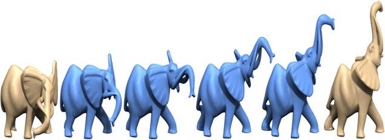

Multi-resolution Mean Shift Clustering Algorithm
for Shape Interpolation
Hung-Kuo Chu,
and Tong-Yee Lee
National
Cheng-Kung University, Tainan, Taiwan

|
Abstract |
In this paper, we solve the problem of 3D
shape interpolation with significant pose variation. For an ideal 3D shape
interpolation, especially the articulated model, the shape should follow the
movement of the underlying articulated structure and be transformed in a way
that is as rigid as possible. Given input shapes with compatible
connectivity, we propose a novel multiresolution mean shift (MMS) clustering
algorithm to automatically extract their near-rigid components. Then, by
building the hierarchical relationship among extracted components, we compute
a common articulated structure for these input shapes. With the aid of this
articulated structure, we solve the shape interpolation by combining 1) a
global pose interpolation of near-rigid components from the source shape to the target shape with 2) a
local gradient field interpolation for each pair of components, followed by
solving a Poisson equation in order to reconstruct an interpolated shape. As
a result, an aesthetically pleasing shape interpolation can be generated,
with even the poses of shapes varying significantly. In contrast to a recent
state-of-the-art work [19], the proposed approach can achieve comparable or
even better results and have better computational efficiency as well. |
|
Paper |
|
|
Videos |
|
|
Dataset |
|
|
Status |
IEEE
Transactions on Visualization and Computer Graphics, Vol. 15, No. 5, pp. 853-866, 2009
|
|
Acknowledgments |
The authors would like to thank anonymous
reviewers’ helpful comments to improve this paper. They are also grateful to
Niloy J. Mitra and Martin Kilian for their help in performing experimental
study with their work [19]. In addition, they thank AIM@SHAPE Shape
Repository and Stanford 3D Scanning Repository for the 3D polyhedral models
used in this paper. The eagle and human poses are taken from Poser 7. This
work is supported in part by the Landmark Program of the NSC-97-2628-E-006-125-MY3 and
NSC-96-2628-E-006-200-MY3), |